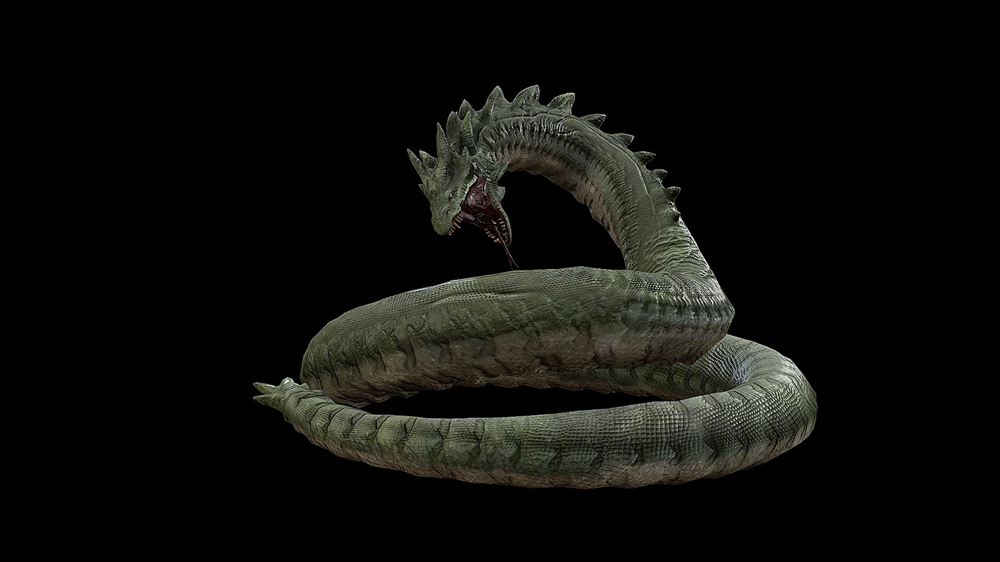
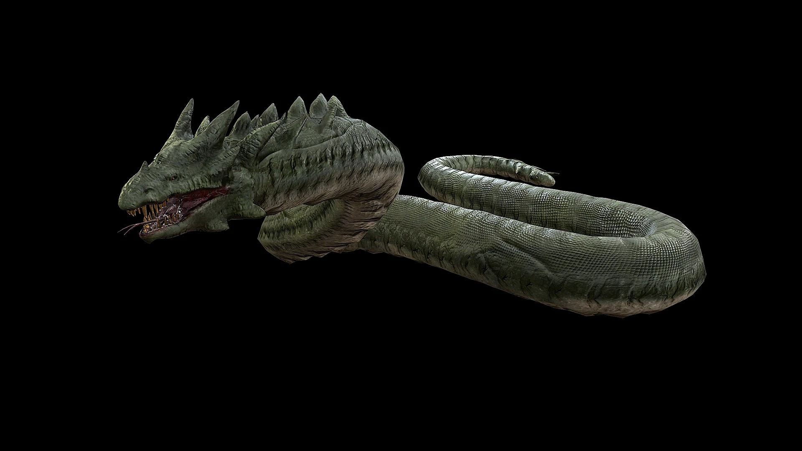
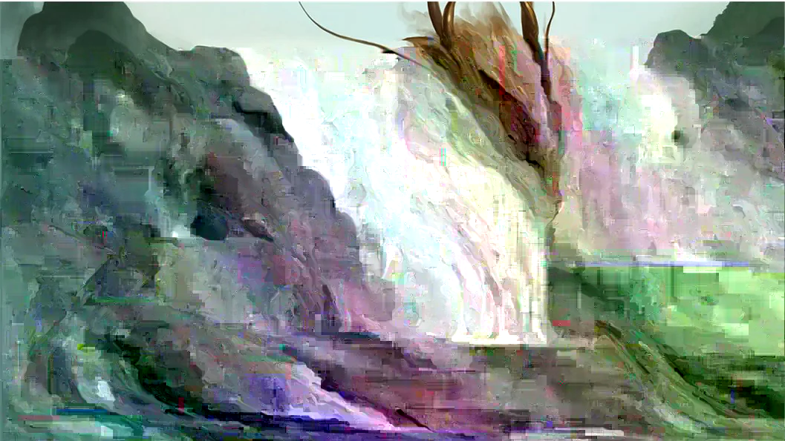

Les Wyrm sont l'équivalent de gros serpent pour nous entre chaseur de dragon. sans aile et sans jambe, la seule chose a regarder est leur soudaient jeste brusque et leur morsure souvent venimeuse. En Fessant une assez bonne attace par surpise, vous pourrez fasilement restraidre ses mouvement et vaincre cette créature. mais feser attetion, la puissance musculaire du wyrm est extrement puissant, combiner avec son endurance énorme, le wyrm peut vous causer probléme si vous ne l'attacer sur vos propre terme. Comme un serpent, il peuvent étuliser le terrain pour faire des attace surpise sans aucun bruix ou s'échaper dans les arbre a trés grande vitesse. il est aviser a tout chaseur de viser le cous du wyrm en meme temp d'imobiliser sa ceux pour une victoire simple et éfficase. Mais toujourd prendre en compte la possibiliter d'un jeai acidique de leur bouche pour remplacer l'habiliter de cracher du feu

Les Wyrm sont une race trés solitaire qui n'aime pas vivre avec un etre aussi ou plus puissant qu'eu meme. Il sont des etre trés basique qui chaseront jusqua leur faim et meme au dela pour leur amusement. mais meme si il s'allaire trés basique comparer a d'autre éspece de dragon, il ont une intélligence trés haute quand il ce vient a de la stratégie, et les attace silencieux. Quand un wyrm arrive dans un endroit, il le marquera comme son territoire et placera des piege pour tuer tous ce qui enfreint sa zone personelle. ce qui peut causser problémme a la population normale quand ces serpent géant décide que votre ville est maintenent leur térritoire.

Le wyrm on un des pouvoir les plus intrigant des dragon. bizarement, aprés avoir vécu apeu prés 100 ans, Le wyrm commence a déveloper son intéligence et des pouvoir mystique. Il se plongerons dans l'océan en forme de piligrimage jusqua arriver au point le plus West du globe. il emmergeron de l'océan avec une apparence changer et L'habiliter de floater sans le besoin d'aile, les wyrm les plus puissant deviene meme des sorte de Drake en émergeant de l'océan avec 4 autre membre. Pour éviter la confusion, on les appele toujour cette sub-classes des wyrm, mais ne vous comporter surtout pas de la meme maniére avec cetteversion plus évoluer. Grace a leur pouvoir mysthique d'origine misterieux, chaque Wyrm qui resort de l'océan varie de son prochain, un pourrai controler des flame mystique et d'autre la terre elle meme. ce qui fait chaque confortation avec eu unique et meme mortel. la meilleur chose a faire quand vous rancontrer un wyrm de cette cathégorie sont de les éviter, car avec leur nouveau pouvoir mystique, il sont déveloper un sureprenant niveau d'intélligence. il peuvent meme coexister avec les humain, comme le prouve les histoire Eastern de ses etre magique.